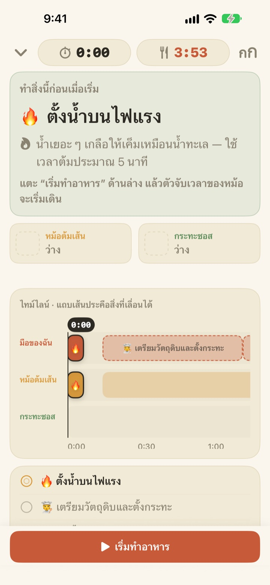
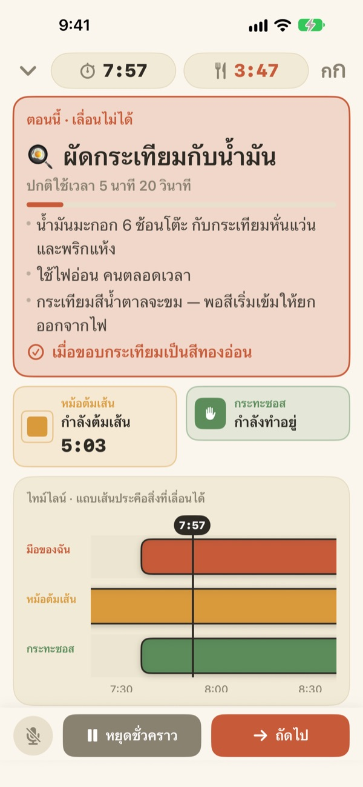
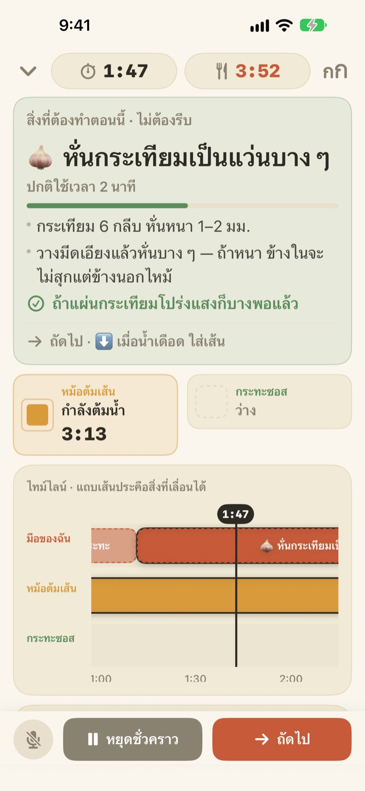
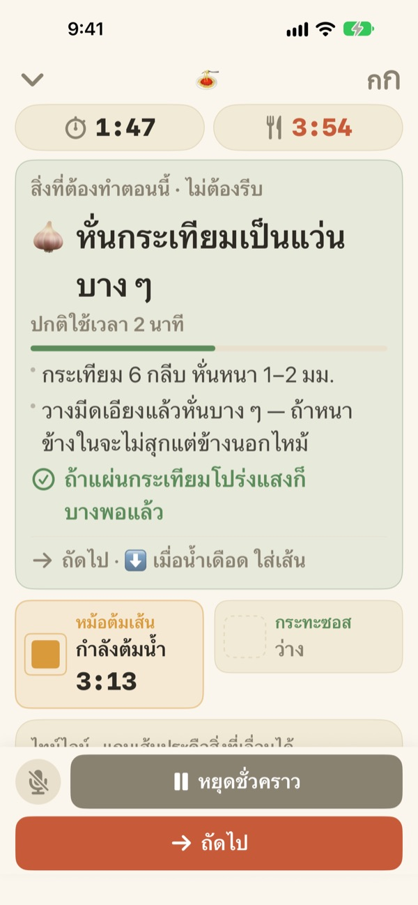

ต้มเส้นไปพลาง
ซอสก็เสร็จไปด้วย
เมื่อสองหม้อเดินด้วยจังหวะต่างกัน Geusaie จะแสดงงานเดียวที่มือของคุณต้องทำตอนนี้ด้วยตัวอักษรใหญ่ ส่วนซอสจะเริ่มโดยนับย้อนจากเวลาที่เส้นพร้อมตักขึ้น
ใช้ได้ทุกฟีเจอร์ฟรี ไม่ต้องมีบัญชี

ลองดูเลย
ลองทำอาลิโอ โอลิโอหนึ่งจานด้วยความเร็ว 20 เท่า แตะ “เริ่มทำอาหาร” แล้วแตะ “ถัดไป” ทุกครั้งที่คิดว่าทำงานนั้นเสร็จ ลองดูด้วยว่าการ์ดเปลี่ยนไปอย่างไรเมื่อถึงเวลาตักเส้น
ตั้งจับเวลาไว้สามตัว แต่เส้นก็ยังเละอยู่ดีใช่ไหม
ตั้งเวลาต้มเส้นหนึ่งตัว ซอสอีกตัว แล้วยังต้องจำเวลาผัดกระเทียมเอง สุดท้ายก็งงว่าอะไรต้องมาก่อน กำลังหั่นกระเทียมอยู่ก็พลาดจังหวะตักเส้น ซอสเสร็จช้ากว่าเส้นไปสองนาที Geusaie รู้จักสูตรในแบบ “ทำอันนี้ แล้วค่อยอันนั้น” จึงบอกคุณแค่งานเดียวที่ต้องทำตอนนี้
งานที่รอไม่ได้ การ์ดจะเปลี่ยนเป็นสีแดง
ตักเส้นขึ้น กระเทียมที่ใกล้ไหม้ เมื่อถึงงานที่ถ้าช้าไปอาหารจะเสีย การ์ดจะเปลี่ยนเป็นสีดินเผาและบอกให้วางงานเตรียมวัตถุดิบไว้ก่อน
เมื่อหม้อไหนเสร็จ จะมีการแจ้งเตือนแม้คุณไม่ได้มองจอ พร้อมบอกว่าต้องทำอะไรต่อทันที

งานหั่นงานขูด ทำตอนมือว่าง
ฝานกระเทียม ขูดชีส ตวงวัตถุดิบ งานพวกนี้ไม่ผูกกับเวลา แอปจึงไม่นับถอยหลังเป็นวินาที แถบจะค่อยๆ เต็มเฉพาะตอนที่มือว่าง หยุดเมื่อหม้อเรียก แล้วทำต่อจากเดิมเมื่อกลับมา
เปิดไฟช้าไปสามนาที งานที่ตามมาก็เลื่อนไปสามนาทีด้วย ตารางเวลาจะคำนวณใหม่ทุกครั้งจากเวลาที่คุณทำจริง

ตั้งไว้ข้างเตา แล้วพูดเพื่อไปต่อ
ขยายตัวอักษรได้สี่ระดับ อ่านได้แม้ยืนห่างหนึ่งสองก้าว และหน้าจอจะไม่ดับระหว่างทำอาหาร
มือเปียกอยู่ใช่ไหม พูดว่า ถัดไป แล้วแอปจะไปงานถัดไปโดยไม่ต้องแตะจอ

เริ่มได้ในสามขั้นตอน
- 1
เลือกเมนู
ดูแค่ว่าใช้เวลาราวกี่นาทีและต้องใช้กี่หม้อ
- 2
แตะ “เริ่มทำอาหาร”
แอปจะแสดงงานแรกให้ก่อน และนาฬิกาของหม้อเริ่มเดินทันทีที่แตะ
- 3
เสร็จแล้วกด “ถัดไป”
แตะปุ่มหรือพูดว่า “ถัดไป” แล้วงานต่อไปจะขึ้นมา
สีบอกว่าเร่งแค่ไหน
- สีเขียว
- งานเตรียมวัตถุดิบ ทำช้าๆ ได้
- สีมัสตาร์ด
- ถึงคิวงานที่หม้อ ทำตอนนี้ได้เลยแต่ยังไม่รีบ
- สีดินเผา
- ถ้าปล่อยไว้ เส้นจะเละหรือกระเทียมจะไหม้ ต้องทำตอนนี้
- ช่องหม้อ
- สี่เหลี่ยมหดลงเท่าไร ก็คือเวลาที่เหลือ เวลาของหม้อไม่เคยถูกซ่อน
บนไทม์ไลน์ แถบเส้นประคืองานที่เลื่อนออกไปได้
ใช้ได้ทุกฟีเจอร์ฟรี
ฟรี
- ทั้งสองสูตร
- ตัวจับเวลาแยกแต่ละหม้อ พร้อมไทม์ไลน์ทั้งหมด
- แจ้งเตือนเมื่อหม้อเสร็จ
- พูดว่า “ถัดไป” เพื่อไปต่อ
- ขนาดตัวอักษรสี่ระดับ
- เปิดสูตรได้จาก Siri และคำสั่งลัด
สนับสนุนผู้พัฒนา (ไม่บังคับ)
- ถ้าแอปช่วยได้ คุณส่งทิปเล็กๆ ได้จากการตั้งค่า
- ทิปไม่ได้ปลดล็อกอะไร ไม่ส่งก็ใช้ได้ทุกฟีเจอร์เหมือนเดิม
ทิปจ่ายครั้งต่อครั้ง ไม่ใช่การสมัครสมาชิก
ไม่มีบัญชี ไม่มีโฆษณา และใช้ทำอาหารได้แม้ไม่มีอินเทอร์เน็ต
คำถามที่พบบ่อย
พูดว่า “ถัดไป” แล้วไม่ไปต่อ
ปุ่มไมโครโฟนมุมซ้ายล่างเป็นสีแดงแปลว่ากำลังฟัง ถ้าเป็นสีเทาแปลว่าปิดอยู่ ครั้งแรกต้องอนุญาตทั้งไมโครโฟนและการรู้จำเสียงพูด ถ้าเคยปฏิเสธไว้ เปิดได้อีกครั้งที่แอปการตั้งค่า > Geusaie แอปจะฟังคำที่เขียนอยู่บนปุ่ม “ถัดไป” ถ้าครัวเสียงดังมาก ให้แตะปุ่ม “ถัดไป” ด้านล่างแทน
หม้อเสร็จแล้วแต่ไม่มีการแจ้งเตือน
ตรวจดูว่าเปิดการแจ้งเตือนไว้ที่แอปการตั้งค่า > การแจ้งเตือน > Geusaie ถ้าเปิดโหมดโฟกัสอยู่ เสียงอาจไม่ดัง การแจ้งเตือนจะมาเฉพาะตอนที่หม้อเสร็จ งานเตรียมอย่างหั่นหรือขูดจะไม่แจ้งเตือน เพื่อไม่ให้รู้สึกถูกเร่ง
ถ้าเริ่มช้า ตารางเวลาจะเป็นอย่างไร
แอปจะคำนวณใหม่จากเวลาที่คุณทำจริง เปิดไฟช้าไปสามนาที งานที่ตามมาก็เลื่อนไปสามนาทีด้วย ส่วนซอสจะยังนับย้อนจากเวลาที่เส้นพร้อมตักขึ้น
ตัวอักษรเล็กเกินไป
ในหน้าทำอาหาร แตะปุ่มขนาดตัวอักษรที่มุมขวาบน แล้วเลือก ปกติ ใหญ่ ใหญ่ขึ้น หรือ ใหญ่สุด ขนาดที่เลือกจะถูกจำไว้ครั้งต่อไป
หน้าจอจะดับระหว่างทำอาหารไหม
ไม่ดับ ระหว่างทำอาหารหน้าจอจะเปิดค้างไว้ คุณจึงไม่ต้องแตะจอขณะมือเปียก
มีเมนูอะไรบ้าง
อาลิโอ โอลิโอ (ราว 15 นาที ใช้ 2 หม้อ) และพาสต้าครีมมะเขือเทศ (ราว 20 นาที ใช้ 2 หม้อ) อ้างอิงสูตรจาก Serious Eats, Gimme Some Oven, RecipeTin Eats และ The Burnt Butter Table เมนูไหนที่ใช้สองหม้อพร้อมกันก็เหมาะทั้งนั้น บอกเราได้เลยว่าอยากให้เพิ่มสูตรอะไร
เสียงของฉันถูกเก็บไว้ไหม
ไม่ แอปฟังแค่คำว่า “ถัดไป” และไม่บันทึกหรือเก็บเสียงใดๆ ถ้าอุปกรณ์รองรับ การรู้จำเสียงจะทำบนอุปกรณ์เท่านั้น แอปไม่เก็บข้อมูลส่วนบุคคล
เปิดด้วย Siri ได้ไหม
ได้ เลือกเมนูใน Siri หรือแอปคำสั่งลัด แล้วหน้าทำอาหารของเมนูนั้นจะเปิดขึ้นทันที นาฬิกาจะเริ่มเดินเมื่อคุณพร้อมตั้งน้ำและแตะ “เริ่มทำอาหาร”
ใช้กับอุปกรณ์อะไรได้บ้าง
iPhone และ iPad ที่ใช้ iOS 17 ขึ้นไป ไม่ต้องมีบัญชีและไม่ต้องใช้อินเทอร์เน็ต
จะแจ้งปัญหาหรือเสนอสูตรได้อย่างไร
ส่งได้จากการตั้งค่า > ส่งความคิดเห็น ในแอป หรืออีเมลด้านล่าง ถ้าระบุรุ่นอุปกรณ์และเวอร์ชัน iOS มาด้วย เราจะตรวจสอบได้เร็วขึ้น ปกติเราตอบกลับภายในไม่กี่วัน
ติดขัดตรงไหน เจออะไรแปลกๆ หรืออยากให้เพิ่มสูตรไหน ส่งมาที่ leeo@kakao.com ได้เลย